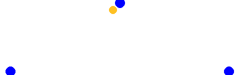

Einspielen
Paarweise
Die folgenden Übungen werden immer paarweise ausgeführt und eignen sich deshalb besonders um ins Einspielen integriert zu werden.
Angriff mit Nachwerfen
Um eine hohe Kadenz an Abwehr- und Annahmebewegungen zu erreichen, hält die angreifende Person zwei Bälle. Der erste Ball wird zuerst locker angegriffen. Der zweite Ball wird dann relativ bald hoch nachgeworfen (Dankeball). Die verteidigende Person wehrt den angegriffenen Ball ab und nimmt den geworfenen Ball danach an. Die angreifende Person fängt den abgewehrten Ball und greift den Dankeball direkt an und wirft darauf den gefangenen Ball nach. Wiederholen solange wie möglich
- Der Dankeball wird zu kurz, oder seitlich versetzt geworfen, um ein Verschieben der verteidigenden Person zu erzwingen.
- Die Angriffe werden härter oder leichter.
- Angriff vom Netz und Abwehr zum Netz.
Ball ins Gesicht
Zwei Personen, ein Ball. Der Ball wird von der angreifenden Person auf die verteidigende Person geworfen. Ziel ist es, den Bereich zwischen oberem und unterem Abwehrbereich zu treffen, um die Entscheidung für eine der beiden Abwehrtechniken und deren Ausführung zu trainieren.
Werfen mit 3 Bällen
Als Paar aufstellen, der Angriffsspieler hat 3 Bälle und wirft diese nacheinander dem Abwehrspieler zu, der sie hoch abwehrt, sodass der Angriffsspieler die Bälle einen nach dem Anderen fangen und wieder zurück werfen kann.
- Die Übung kann beliebig erschwert werden, indem die Bälle kürzer, länger oder seitlich versetzt geworfen werden. Es ist dann auf die Linie großer Zeh, Knie, Schulter zu achten
- Es können aufeinander gestellte Bänke zwischen den Spielern aufgestellt werden um das Netz zu simulieren
Abwehr mit drei Bällen
Als Paar aufstellen. Ein Spieler hat drei Bälle. Erst ein harter Angriff dann ein kurzer Ball und zum Abschluss ein hoher Ball, der erlaufen werden muss.
Kurz, lang, kurz
Paarweise. Spieler 1 spielt langen Ball zu Spieler 2 und läuft nach. Spieler 2 spielt kurz vor sich zu Spieler 1, der wieder kurz zurück und kehrt auf seine ursprüngliche Position zurück. Spieler 2 spielt nun lang und läuft nun dem Ball nach und spielt den von Spieler 1 kurz gespielten Ball zurück und kehrt dann wieder zum Ursprung zurück. Und so weiter
- mit Baggern
- oberes Zuspiel im Sprung
Lang, Mitte, Kurz
Paarweise, ein Angriffsspieler mit Rücken zum Netz und ein Abwehrspieler:
- Langer Angriff
- Mittel gelegt
- kurz gelegt
- Ein Zwischenspiel und von vorne
Lang, kurz
Angriffsspieler mit dem Rücken zum Netz greift lang an auf Abwehrspieler. Hohe Abwehr. Angriffsspieler legt den Ball kurz. Nach Zwischenspiel wieder langer Angriff usw.
- kurzer Ball muss im oberen Zuspiel gespielt werden
Zuspiel im Sprung
Die Spieler stehen sich im etwas geringem Abstand gegenüber und spielen sich den Ball immer mit oberen Zuspiel im Sprung zu. Dabei darauf achten, dass man immer einen kleinen Stemmschritt macht und sich nach jedem gespieltem Ball wieder zwei Schritte zurückzieht. Der Ball sollte gespielt werden wenn man gerade den höchsten Punkt überschritten hat, dadurch entsteht der Eindruck, man würde kurz in der Luft stehen.
Zwischenspiel
Jeder Spieler spielt sich den Ball einmal selbst zu. Dabei gibt es verschiedene Varianten:
- Einmal kurzes oberes Zuspiel und lang zurück
- unteres Zuspiel und und oberes zurück
- kurzes oberes Zuspiel und um 180° drehen und über Kopf zurück
- unteres Zuspiel um 180° drehen und über Kopf im oberen Zuspiel zurück
- Viele weitere Varianten denkbar
Abwehr Zuspiel Angriff
Zwei Dreiergruppen. Eine Gruppe am Netz ein Spieler auf Position 2 und zwei Spieler auf 4. Ein Abwehrspieler auf Position 1. Es beginnt mit einem Angriff von Position 4 auf Position 1. Der Angriff wird abgewehrt und der Angreifer wird zum Zuspieler und spielt von Position 2,5 auf Position 2 zu und stellt sich dann hinter 2 an. Der Abwehrspieler stellt sich hinter 6 an und ein neuer Abwehrspieler läuft auf 5 und erwartet den Angriff von 2. Der zugespielte Ball wird von 2 angegriffen und von 5 abgewehrt. Der Spieler von 2 wird der neue Zuspieler und spielt von 2,5 auf 4 zu. Abwehrspieler von 5 stellt sich wieder hinten an und ein neuer Abwehrspieler läuft auf Pos 1 und verteidigt. Ab hier wie von Anfang an.
Drei Spieler wechseln sich auf der Netzposition ab und greifen diagonal an. Drei Spieler wechseln sich in der Abwehr ab.
- Ballkontrolle
- Richtige Position zum Ball in der Abwehr
- Richtige Abwehrposition
- auch mit 2 Spielern in der Abwehr möglich
- Angriff im Sprung
- Longline Angriff
Ball aus der Mitte werfen
Werfer am Netz, Annahmespieler im Feld. Der Ball wird wird links und rechts geworfen um die richtige Bewegung vom Ball weg zu lernen. Annahmespieler zieht sich 2-3 Schritte zurück und baggert den Ball nach vorne. Jeweils ca. 10 Würfe auf jede Seite.
- auf die richtige Grundstellung achten
- auf die richtige Bewegung zum und weg vom Ball achten
Netz sichern
Person A wirft/schlägt den Ball ins Netz. Person B sichert, spielt sich selbst zu und greift ins Netz an. Nun sichert A, spielt sich den Ball selbst zu und greift wieder ins Netz an. Wiederholen, bis ein Fehler passiert.
- vereinfachen dadurch dass die sichernde Person den Ball nach dem Sichern fängt und ihn dann ins Netz wirft.
Zu Dritt
Russische Abwehrübung
Drei Spielende, zwei Bälle. Die Spielenden stehen auf einer Linie und die äusseren Spielenden werfen abwechselnd den Ball so, dass die Person in der Mitte immer ein paar Schritte machen muss, bis der Ball gespielt werden kann. Die Bälle sollen so geworfen werden, dass es für die Person in der Mitte anstrengend ist, aber eine saubere technische Ausführung möglich ist.

- auf korrekte Technik achten, insbesondere vollständige Drehung der Person in der Mitte
- jeder zweite Ball wird angegriffen.
- manche Bälle werden gelegt
- es werden Bälle gespielt, die eine Abwehr im oberen Zuspiel erfordern
Zuspiel aus der Mitte
3 Spieler stehen in einer Linie. der mittlere Spieler (Zuspieler) spielt den Ball einem der äusseren Spieler zu. Dieser greift auf sein Gegenüber an, der ihn wiederum zum Zuspieler abwehrt. Der Zuspieler stellt nun dem abwehrenden Spieler der wiederum angreift usw.
- Der Zuspieler spielt immer im Sprung zu
- Der Zuspieler spielt über Kopf zu.
- Die Angreifer legen den Ball kurz.
- Nach dem Angriff tauschen Zuspieler und Angreifer den Platz.

Abwehr hoch Feldmitte
Je ein Angreifer auf 2 und 4. 1 Ball. Mindestens 3 Spieler in Warteposition hinter dem Feld. Ein Spieler beginnt und spielt den Ball zu dem ihm diagonal stehenden Angreifer, dieser greift an und der Spieler wehrt hoch in die Feldmitte ab. Spieler verlässt das Feld. Ein neuer Spieler von der Warteposition läuft ein und spielt den Ball zum anderen Angreifer, der wiederum auf den neuen Spieler angreift. Dieser wehrt wieder hoch ab und verlässt das Feld und ein neuer Spieler läuft ein…
- Abwehr nicht zum Angreifer, sondern hoch in die Feldmitte.
Abwehr Zuspiel Angriff
Zwei Dreiergruppen. Eine Gruppe am Netz ein Spieler auf Position 2 und zwei Spieler auf 4. Ein Abwehrspieler auf Position 1. Es beginnt mit einem Angriff von Position 4 auf Position 1. Der Angriff wird abgewehrt und der Angreifer wird zum Zuspieler und spielt von Position 2,5 auf Position 2 zu und stellt sich dann hinter 2 an. Der Abwehrspieler stellt sich hinter 6 an und ein neuer Abwehrspieler läuft auf 5 und erwartet den Angriff von 2. Der zugespielte Ball wird von 2 angegriffen und von 5 abgewehrt. Der Spieler von 2 wird der neue Zuspieler und spielt von 2,5 auf 4 zu. Abwehrspieler von 5 stellt sich wieder hinten an und ein neuer Abwehrspieler läuft auf Pos 1 und verteidigt. Ab hier wie von Anfang an.
Drei Spieler wechseln sich auf der Netzposition ab und greifen diagonal an. Drei Spieler wechseln sich in der Abwehr ab.
- Ballkontrolle
- Richtige Position zum Ball in der Abwehr
- Richtige Abwehrposition
- auch mit 2 Spielern in der Abwehr möglich
- Angriff im Sprung
- Longline Angriff
Koordination
Koordinative Übungen können sowohl ins Einspielen als auch im Training integriert werden. Die Übungen sollten immer fordernd sein, sonst haben sie keinen Trainingseffekt.
Parallel spielen mit 2 Bällen
Zwei Spieler spielen parallel mit 2 Bällen. Die Technik sollte vorgegeben werden. Zuerst oberes Zuspiel, unteres Zuspiel, oder abwechselnd.
Spiel mit 3 Bällen
Zu zweit. Jeder Spieler hält einen Ball in der Hand. Mit einem dritten Ball wird hin und her gespielt. Der eigene Ball muss immer passend hochgeworfen und wieder gefangen werden.
Ein Spieler 2 Bälle
Ein Spieler hält einen Ball in jeder Hand das gegenüber spielt einen Ball zu. Der Spieler mit den beiden Bällen in der Hand wirft diese rechtzeitig hoch um den vom Partner geworfenen Ball zu spielen und fängt anschließend seinen eigenen Bälle wieder.
Die Übung kann dadurch erschwert werden, dass kleinere Gegenstände benutzt werden, z.B. Tennisbälle.
Drei Spieler 4 Bälle
Wie [Spielen mit Nachlaufen], allerdings hat jeder Spieler einen Ball in der Hand und wirft sich den Ball selbst zu, spielt unter dessen den Spielball, fängt seinen eigenen Ball und läuft dem Spielball nach.
Zwei gegen Zwei mit 3 Bällen
Die Übung wird auf dem halben halben Feld gespielt. Jedes 2er-Team hat einen eigenen Ball (Teamball), und ein dritter Ball (Spielball) wird mit den üblichen drei Berührungen wie im regulären Volleyball ausgespielt. Die Herausforderung besteht darin, dass kein Ball den Boden berühren darf.
Der Teamball darf weder abgelegt noch fallengelassen werden. Er kann entweder zwischen den Teammitgliedern zugespielt oder selbst hochgeworfen werden, muss aber stets in der Luft bleiben. Für den Spielball gelten die regulären Volleyballregeln. Berührt einer der beiden Bälle den Boden oder wird ein anderer Fehler gemacht, zählt der Punkt als verloren. Das Team, das den Fehler begangen hat, wird durch das nächste wartende Team ersetzt.
- Jede Person hält einen Ball in der Hand.
- 3 gegen 3 mit 5 oder 7 Bällen.
Mit Tennisbällen
Ball gegen die Wand
Der Ball wird abwechselnd mit links und rechts gegen die Wand geworfen und mit der jeweils anderen Hand gefangen. Darauf achten, dass der Ball mit den Fingern gefangen wird und nicht mit dem Ballen. Die Schwierigkeit kann durch den Abstand zur Wand und das Tempo mit dem geworfen wir variiert werden.
Ball gegen die Wand II
Zwei Spieler. Spieler A steht in Abwehrhaltung mit Blick auf die Wand. Spieler B wirft den Ball von hinten gegen die Wand und Spieler A fängt den Ball mit beiden Händen oder mit einer Hand. Schwierigkeit mit Abstand zur Wand und Geschwindigkeit variieren.
- Ein Auge geschlossen